Scales and chords show interesting patterns on the circle of fifths (All these are based on A as the root note, but transposition is just a rotation operation so generates the same shapes):
| Scale | Notes | Semitones | Fifths | Torus |
|---|---|---|---|---|
| Major | A B C# D E F# Ab | 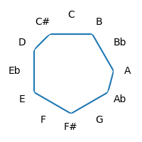 | 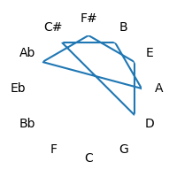 | 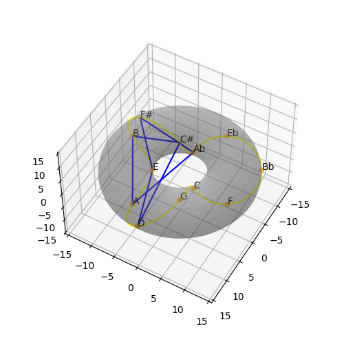 |
| Minor | A B C D E F Ab | 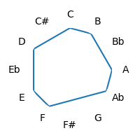 | 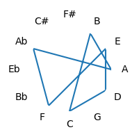 | 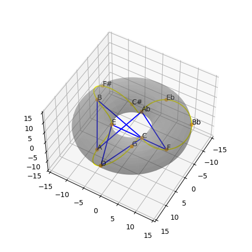 |
| Pentatonic | A B C# E F# | 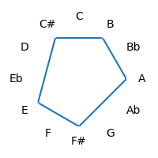 | 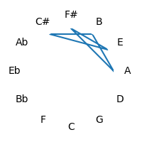 | 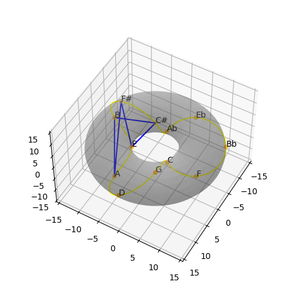 |
| Chord | Notes | Semitones | Fifths | Torus |
| 7 | A C# E G | 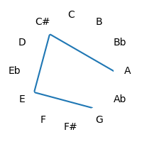 | 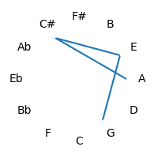 | 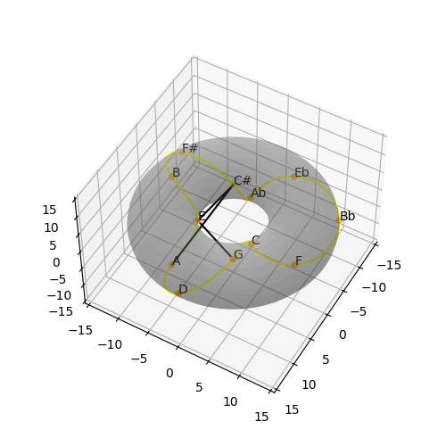 |
| Aug | A C# F | 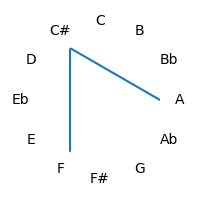 | 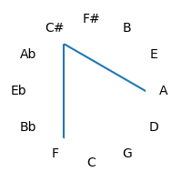 | 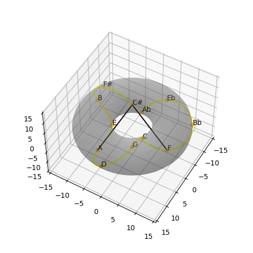 |
| Dim | A C Eb | 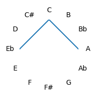 | 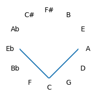 | 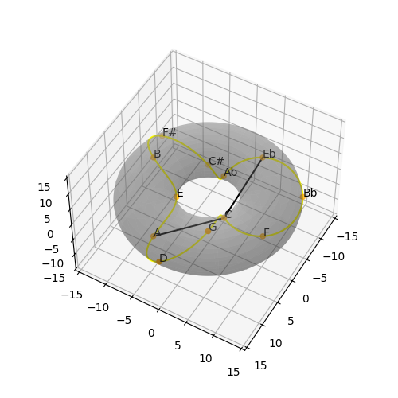 |
| Maj | A C# E | 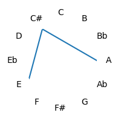 | 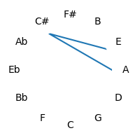 | 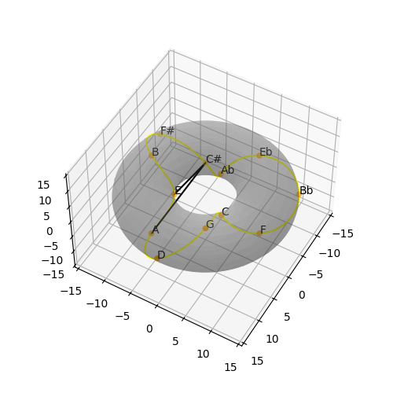 |
| Maj7 | A C# E Ab | 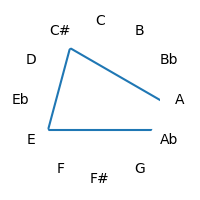 | 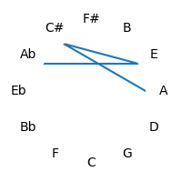 | 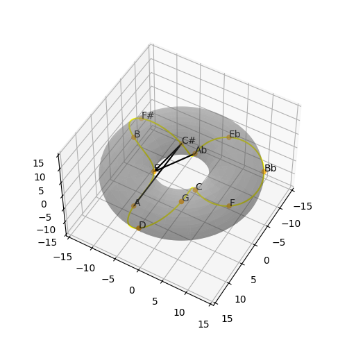 |
| Min | A C E | 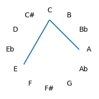 | 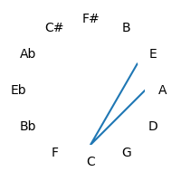 | 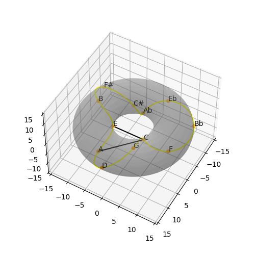 |
| Min7 | A C E G | 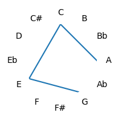 | 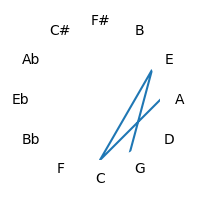 | 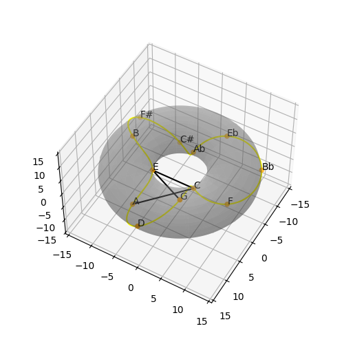 |
| Sus2 | A B E | 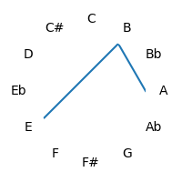 | 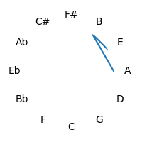 | 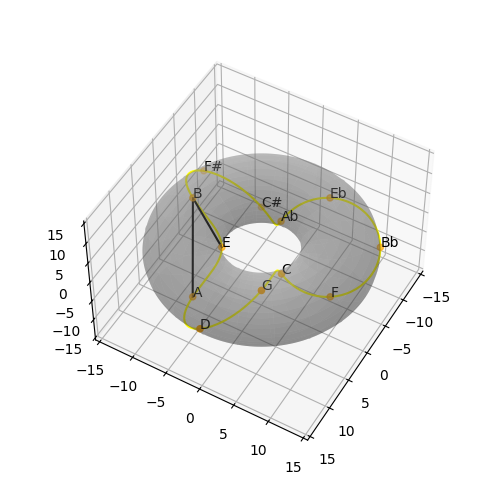 |
| Sus4 | A D E | 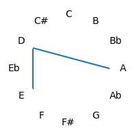 | 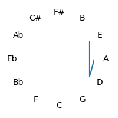 | 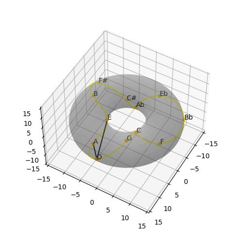 |
© David Fraser 2013